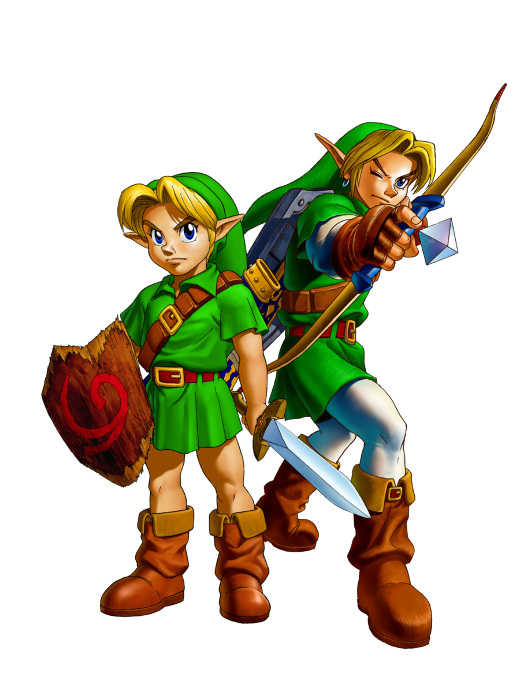
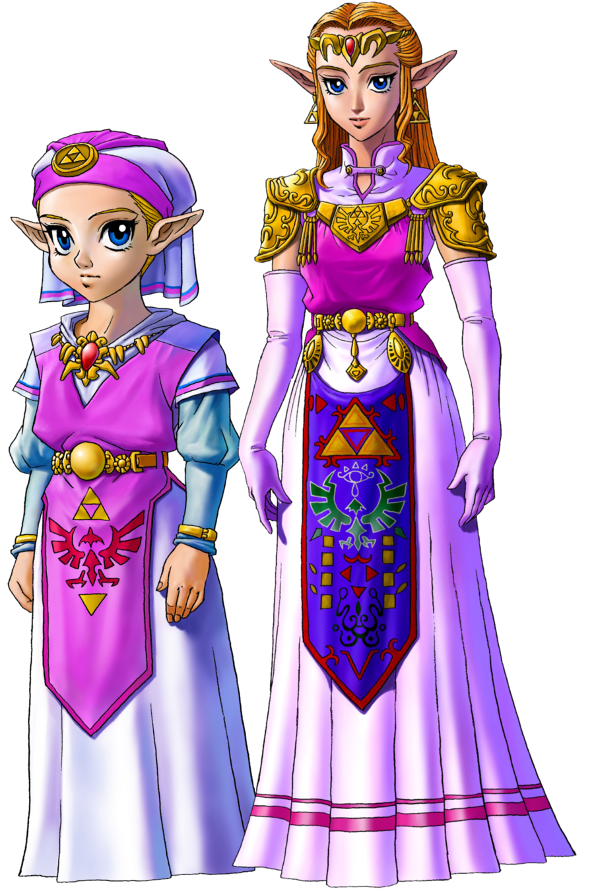
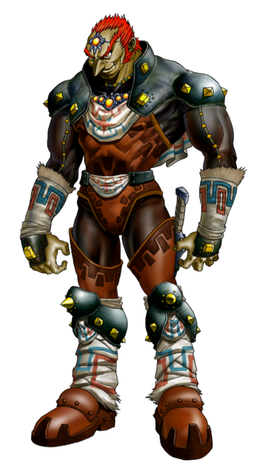

Link
Le Héro du Temps, est le protagoniste dans The Legend of Zelda: Ocarina of Time. Sept ans après avoir retiré la Master Sword du Piédestal du Temps, Link s'est réveillé dans le Temple de la Lumière, où il est accueilli par le Sage de la Lumière, Rauru. Link a dû attendre sept ans jusqu'à ce qu'il ait l'âge approprié pour manier la lame du fléau du mal, la Master Sword. Maintenant que Ganondorf possède la Triforce du Pouvoir, Link doit utiliser ses objets qui lui ont été accordés au cours de sa quête pour récupérer les Médaillons et sauver les Sages pour ouvrir le chemin qui mène Ganondorf et le vaincre une bonne fois pour toutes.

Zelda
La Princesse Zelda dans The Legend of Zelda: Ocarina of Time est la quatrième apparition de Zelda dans la série The Legend of Zelda, et la quatrième Zelda chronologiquement. Ayant grandi dans les couloirs du Château d'Hyrule, la jeune Princesse Zelda, désignée par l'Arbre Mojo étant la Princesse du Destin, s'inquiétait de plus en plus de l'un des associés de son père, le roi Gerudo, Ganondorf, et d'une vision de sa trahison. Exprimant ses inquiétudes avec son tuteur et nourrice Impa, elle a continué à surveiller le Gerudo malgré son incapacité à faire quoi que ce soit à son sujet. Cela a changé lorsqu'un jeune garçon Kokiri nommé Link s'est faufilé dans la cour de son jardin. Pendant sept ans, Zelda est restée cachée, s'entraînant dans les voies du Sheikah par Impa sous le nom de Sheik, jusqu'à ce que Link, qui s'était retrouvé piégé dans le royaume sacré, soit libéré.

Ganondorf
Pendant les événements d'Ocarina of Time, Ganondorf s'efforce de conquérir les terres d'Hyrule et d'obtenir la Triforce. Afin d'accéder à la Triforce dans le Royaume Sacré, Ganondorf a recherché les trois Pierres Spirituelles des Kokiri, des Gorons et des Zoras. Quand ils ont refusé de les remettre, il a placé une malédiction de mort sur l'Arbre Mojo et le Seigneur Jabu-Jabu, et a bloqué la Caverne de Dodongo avec un énorme rocher. En même temps, il a prêté une fausse allégeance au roi d'Hyrule pour gagner sa confiance. Pendant les sept années où Link était en animation suspendue, Ganondorf a conquis le royaume d'Hyrule, transformant le château d'Hyrule de style féodal en Château de Ganon, un gratte-ciel à plusieurs niveaux reposant sur une île flottante qui planait au-dessus d'un grand lac de lave. Il fit complètement décimer la ville du château, la laisser en ruines et la peupler de morts-vivants, provoquant la fuite de nombreux Hyliens vers le village de Kakariko.
